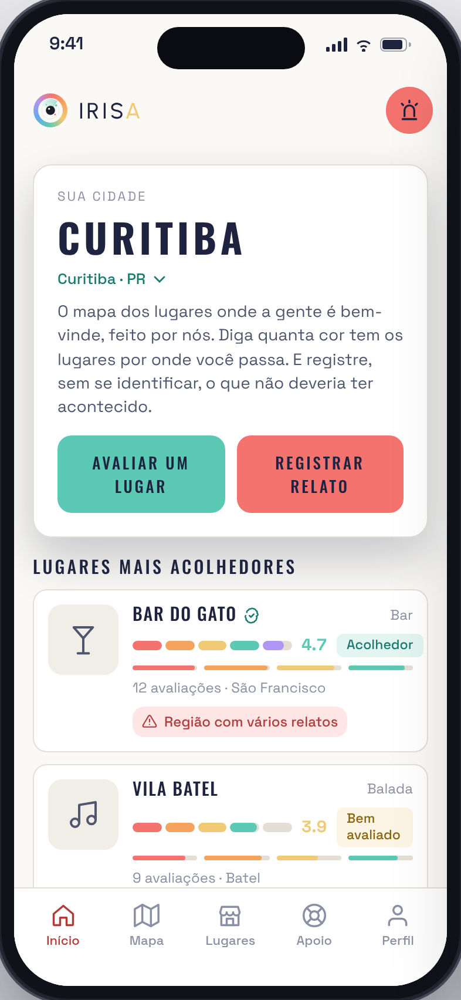
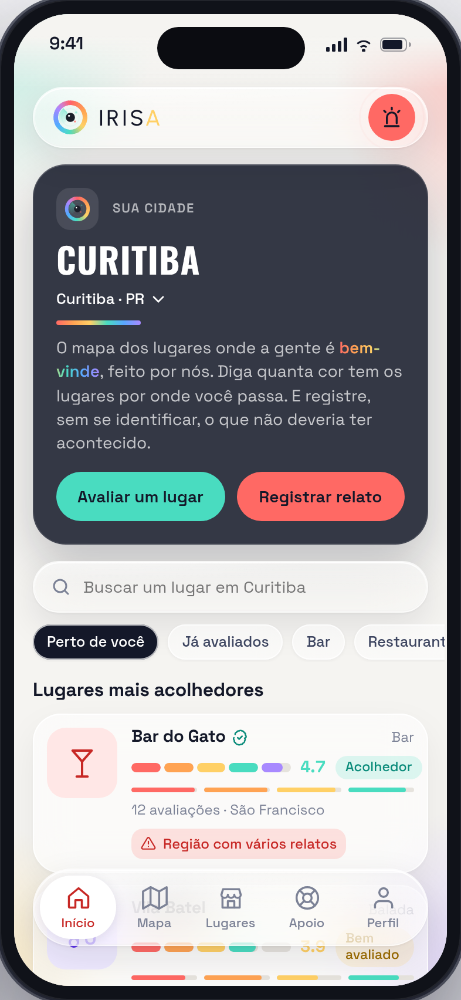
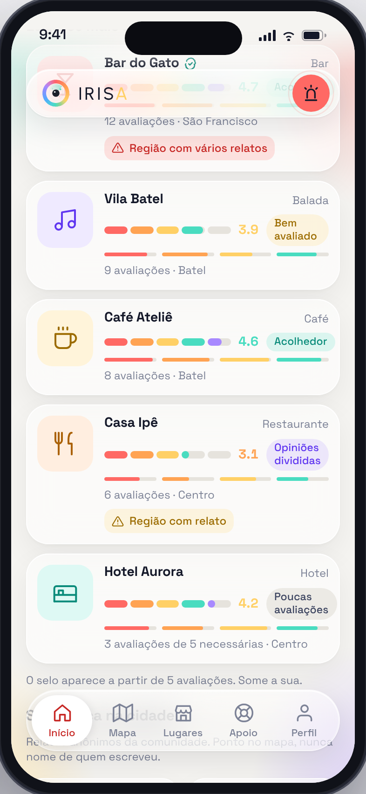
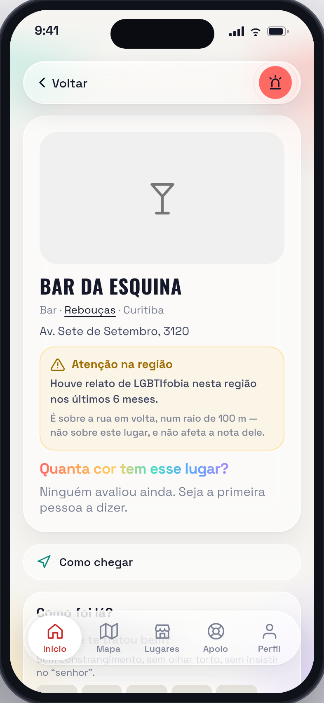
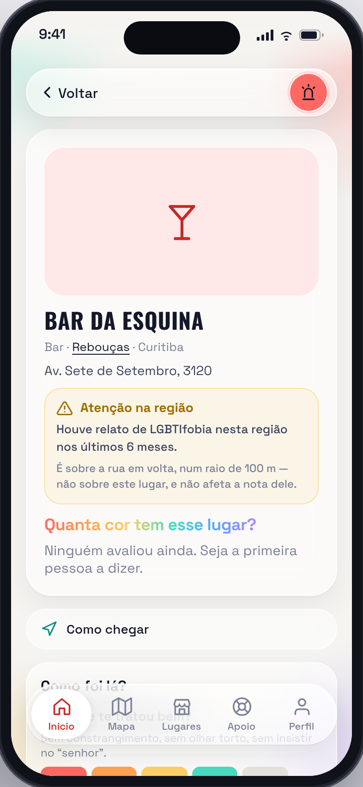
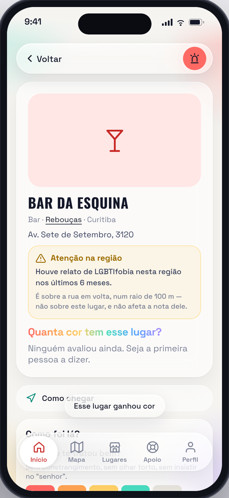
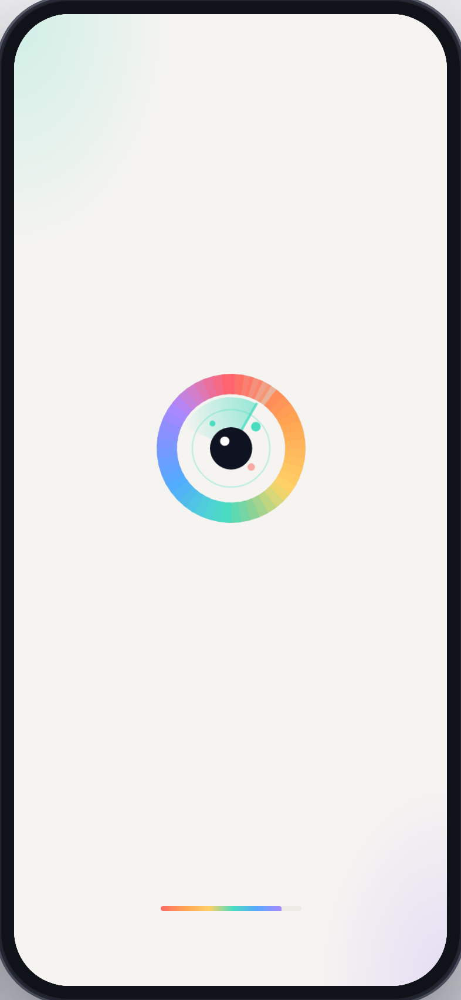
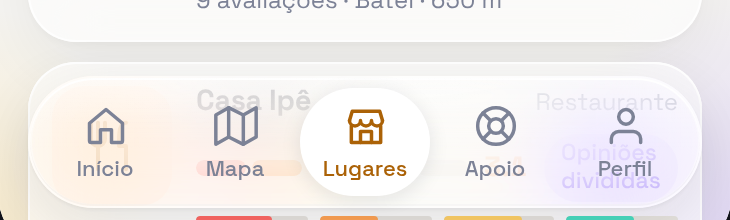

Eu tava entediado ontem. Você sabe como é: tédio + laptop + uma pessoa com opinião demais = eu mexendo no projeto de todo mundo. O seu foi só mais um. Desculpa. De nada.
Lê até o fim antes de me bloquear. Tem tour virtual no final, e eu fiz a parte chata: as fontes carregam, os ícones centralizam, o Safari não chora.
Sério, sem ironia nenhuma. Tava lindo. E eu não mudei nada. Nada mesmo. Zero. Só… detalhes. De refinamento. Pensando em iOS.
Foram dezesseis versões de detalhes, mas quem conta versão não tinha nada melhor para fazer num sábado. Estrutura, menus, textos, regras, banco: tudo exatamente onde você deixou.


O iOS chegou de vidro, e barra opaca agora é meia com sandália: funciona, mas a gente sabe. Então o cabeçalho e a barra de abas viraram cápsulas translúcidas flutuando, e o conteúdo passa por baixo delas, como deve ser.

As suas cores estavam a 86% de saturação. Coral a 86%, Alysson? A gente não é 86% de nada. Subi para o teto, que é o máximo que a física permite antes de virar letreiro de balada. As mesmas seis cores, a mesma marca, só mais acordadas.
Lugar sem avaliação fica cinza: está ali, mas ninguém contou ainda como é. Aí a comunidade responde as quatro perguntas e a foto vai ganhando cor. Uma pergunta, um quarto de cor. Na quarta, o lugar assume a cor dele.
É a sua regra, só desenhada: o lugar recebe cor, a rua recebe aviso. O app inteiro abre em preto e branco e floresce; a nota enche gomo a gomo; os números contam. Nada disso muda o que as telas fazem.



A sua marca já era um radar. Eu só pedi para ela trabalhar: o anel nasce cinza, a varredura dá uma volta e acende gomo a gomo. Depois a pupila abre, o nome entra fechando o espaçamento e uma barrinha arco-íris marca o progresso.
Dura 2,7 segundos: o tempo de ler a sala ao entrar na festa.

Toca numa aba e o ícone sai do cinza, passa pelas seis cores e pousa numa só, a cor daquela aba. Início coral, Mapa turquesa, Lugares laranja, Apoio lilás. Não é a Parada inteira, é um adesivo de bandeira no notebook. Discreto. Ha.

Porque ninguém quer descer três telas para achar o bar. A gente quer o bar. Campo de busca e chips por categoria logo abaixo do cartão da cidade; a aba Lugares continua igual, só que agora os filtros dela filtram de verdade.
Foi a única coisa que entrou de fato. Se você odiar, é um bloco só, some em cinco minutos e eu finjo que nunca aconteceu.
É um protótipo navegável com os dois aparelhos lado a lado: o seu app como está hoje e a proposta. Os botões mexem nos dois ao mesmo tempo, então você compara sem esforço, que é o meu esporte favorito.